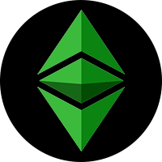
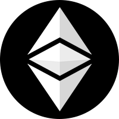

Ether (ETC) is the native asset of Ethereum Classic, the original EVM launched in 2015

Wrapped Ether (WETC) is a tokenized version of Ethereum Classic's ETC asset
| Network | Chain ID | Consensus Mechanism | Contract Address | Tx Hash |
|---|---|---|---|---|
| Mainnet: Ethereum Classic | 61 | Proof of Work | 0x1953cab0E5bFa6D4a9BaD6E05fD46C1CC6527a5a | 0x9bb...2259e |
| Testnet: Mordor | 63 | Proof of Work | 0x1953cab0E5bFa6D4a9BaD6E05fD46C1CC6527a5a | 0x895...a212d |
Put plainly, WETC is "wrapped ETC" but let's start by introducing the players.
Ether or ETC is the native currency built on the Ethereum Classic blockchain, the original Ethereum Virtual Machine (EVM) launched in 2015.
When a Dapp (decentralized app) is built on top of the Ethereum Classic blockchain it usually implements its own form of token. Real world assets may be pegged 1:1 to a token on Ethereum Classic like US Dollars to USD Coin (USDC) tokens.
ERC-20 is a standard developed after the release of ETC that defines how tokens are transferred and how to keep a consistent record of those transfers among tokens on the Ethereum Classic network.
As mentioned above, ETC was the proto-token of the Ethereum Classic Alt tokens, which means it was built before the ERC-20 standard existed.
The reason you need WETC is to be able to trade ETC for other ERC-20 tokens on decentralized protocols like ETC swap. Because decentralized platforms running on Ethereum Classic use smart contracts to facilitate trades directly between users, every user needs to have the same standardized format for every token they trade. This ensures tokens don’t get lost in translation.
When you "wrap" ETC, you aren't really wrapping so much as trading via a non-custodial smart contract for an equal token called WETC. If you want to get plain ETC back you need to "unwrap" it, or trade WETC back for plain ETC. You can wrap/unwrap ETC through ETC swap's decentralized user interface hosted on IPFS. Bookmark this censorship-resistant IPFS gateway which is always available through the distributed web.
| Projects |
|---|
| The Canonical WETC Initiative |
| ETC swap |
| EthereumClassic.com |
BlockScout | CoinGecko | CoinMarketCap | TradingView
We stand on the shoulders of giants. Inspired by the WETH.io project. Thank you to Nikolai Mushegian and the DappHub participants.
Note: WETC Contract was updated to best practices when deployed in 2022. Why?